Domaine linéaire, domaine étiré
La séquence sépare les étapes appliquées aux données linéaires (bleu) de celles appliquées après l'étirement (rose). Un outil placé dans le mauvais domaine est refusé, avec le motif.
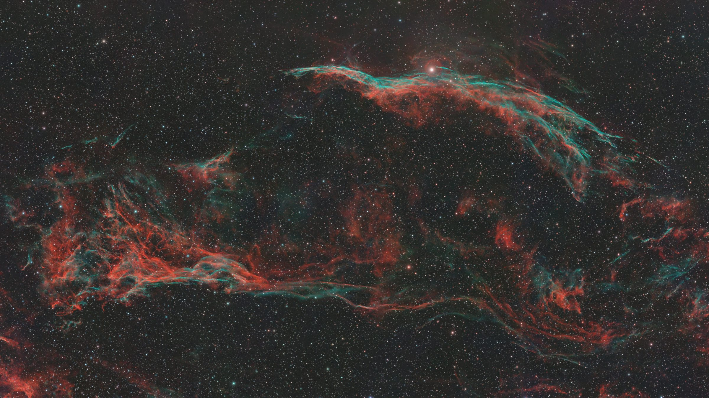
Logiciel d'astrophotographie · gratuit
COSMO réunit dans une seule application l'empilement des poses, la calibration des couleurs sur catalogue, le traitement de l'image linéaire puis étirée, et la mesure de la pile.
NGC 6960 · Dentelles du Cygne · Seestar S50 Pro · traitement COSMO
Interface
L'image occupe toute la fenêtre. La séquence de traitement est à gauche, les réglages de l'outil sélectionné à droite. Fit recadre l'image entière dans la zone libre ; au zoom, elle passe sous les panneaux.
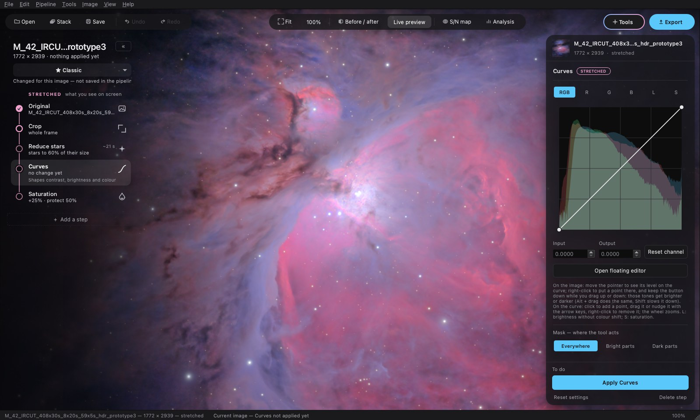
La séquence sépare les étapes appliquées aux données linéaires (bleu) de celles appliquées après l'étirement (rose). Un outil placé dans le mauvais domaine est refusé, avec le motif.
Preview calcule l'étape sans l'appliquer. Apply l'applique. Go back to this step ramène l'image à l'état précédant une étape déjà appliquée. Aucune étape n'est lancée automatiquement.
Une séquence d'étapes et leurs réglages s'enregistrent dans un fichier .cosmopipe, réutilisable sur une autre image. Le pipeline Classic est chargé à l'ouverture.
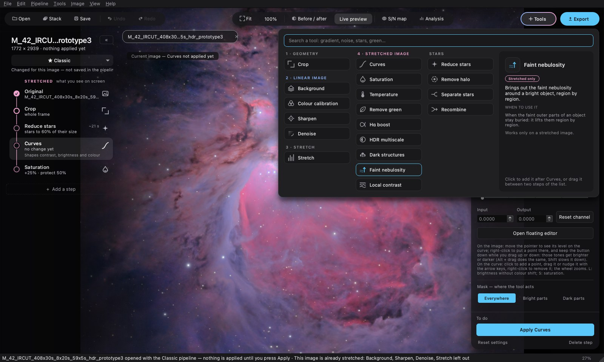
Empilement
L'outil Stack prend un dossier de poses et produit une pile. Trois modes.
Avec les poses longues seules, le cœur de la nébuleuse est saturé. Avec le stack HDR, il est restitué. Le reste de l'image est inchangé.
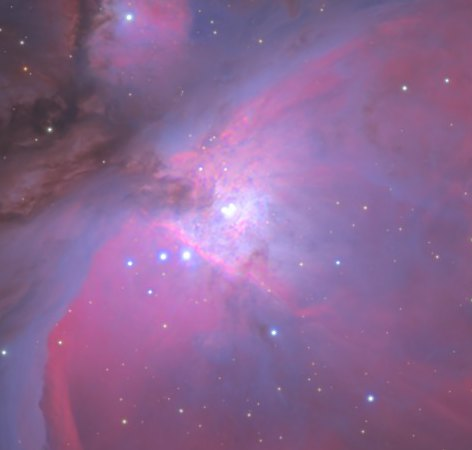
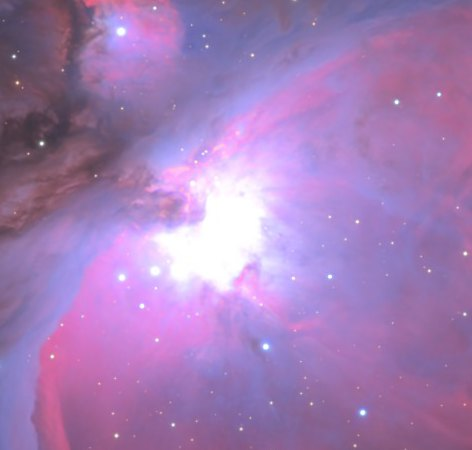
poses longuesstack HDRLa comète est trouvée automatiquement. À gauche, la pile alignée sur la comète : les étoiles filent. À droite, l'image combinée.
Sans déplacement mesurable, la fenêtre l'indique et produit une pile standard.
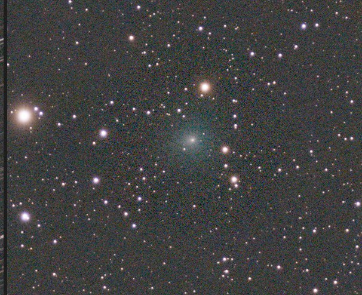
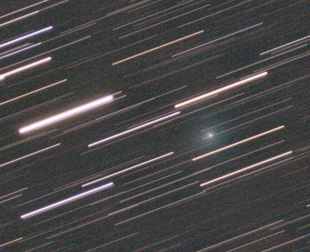
alignée sur la comètecombinéeTraitement
Chaque outil a un aperçu calculé sur l'image. Les outils de l'image étirée acceptent un masque (zones claires ou zones sombres).
En un clic, l'outil fait ressortir les nébulosités faibles zone par zone, sans saturer les régions brillantes. Le réglage Neutral black maintient un fond neutre dans les nébuleuses sombres.
Exemple : M 42, mêmes poses. À droite, avec l'outil Faint nebulosity.
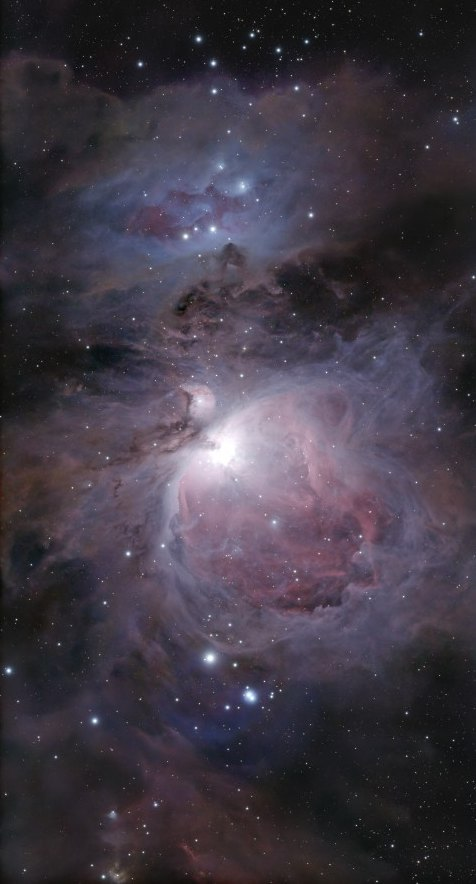
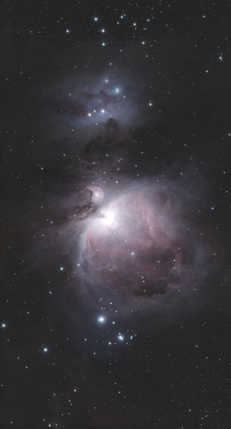
sansavec Faint nebulosityL'outil identifie les étoiles de l'image dans le catalogue Gaia DR3 et règle les trois couleurs d'après la couleur connue de chaque étoile. Aucun logiciel d'astrométrie n'est nécessaire.
Le réglage est enregistré pour le capteur et le filtre, puis réutilisé sur les images suivantes.
Quatre autres outils, chacun sur une image réelle.
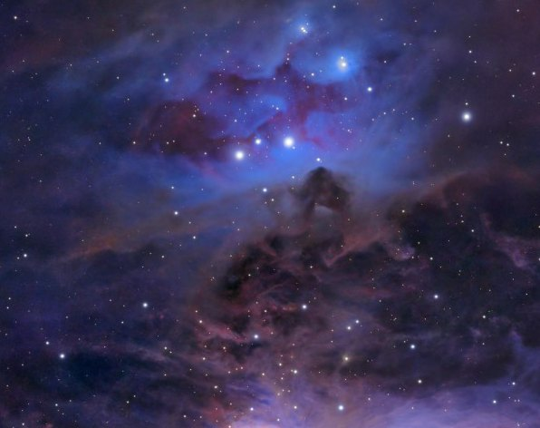
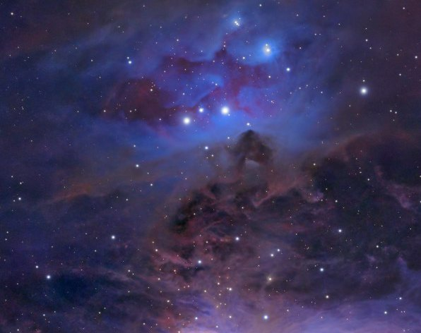
sansavec Local contrast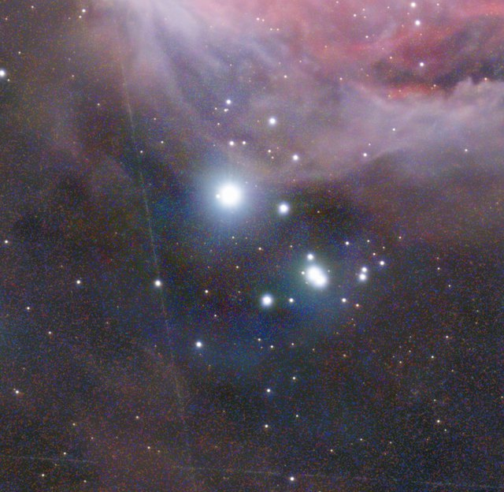
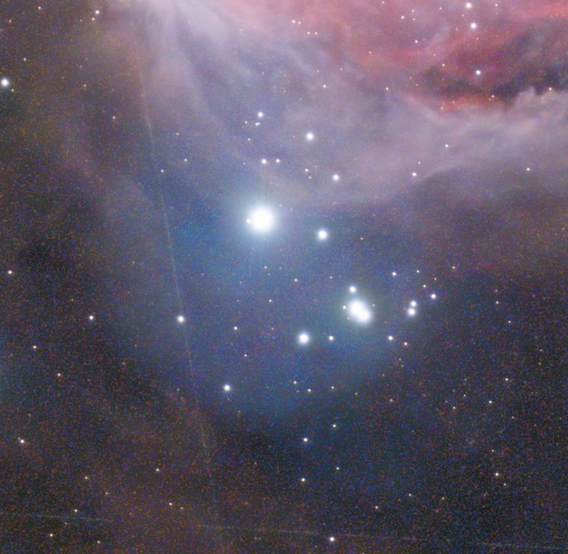
sansavec Remove halo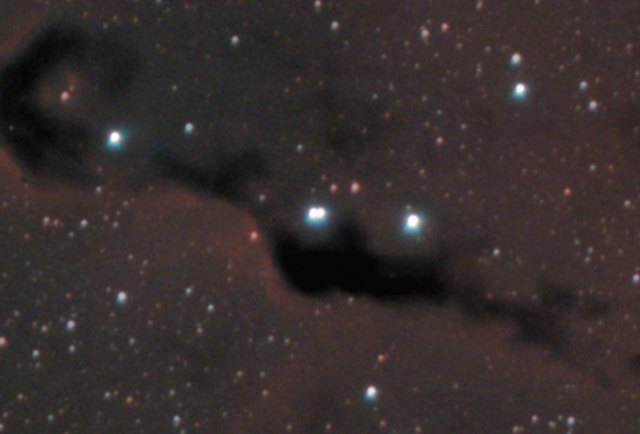
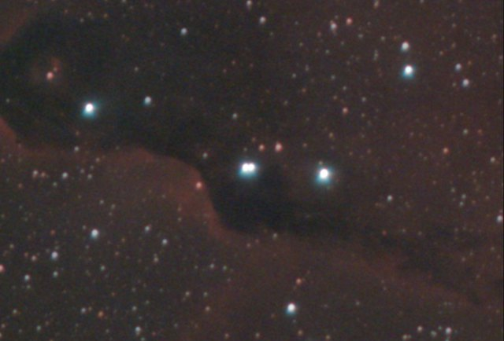
sansDark structures 100 %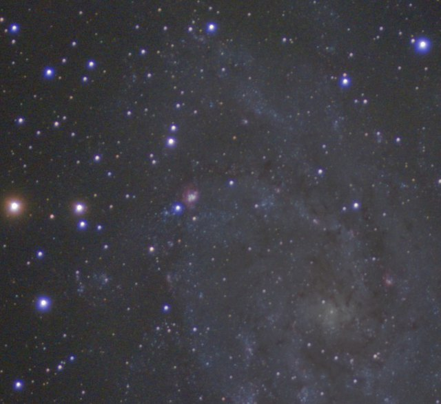
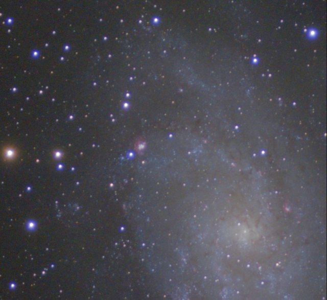
sansHDR multiscale 60 %Mesure
Deux outils mesurent la pile sans la modifier.
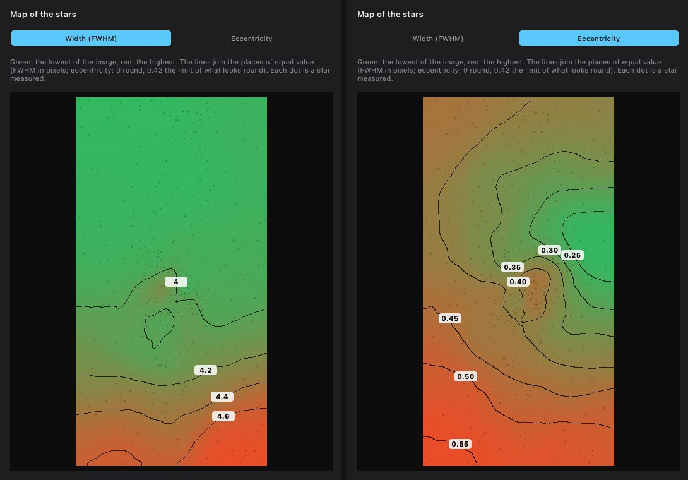
Largeur à mi-hauteur (FWHM) et excentricité des étoiles, en isolignes sur tout le champ. Diagnostic affiché quand l'écart dépasse 10 % : inclinaison du capteur, courbure de champ, suivi. Avec Gaia : magnitude limite à 5 σ et limite de brillance de surface à 3 σ sur 10″ × 10″.
Exemple : magnitude limite G 18,2, brillance de surface limite 24,1 mag/arcsec².
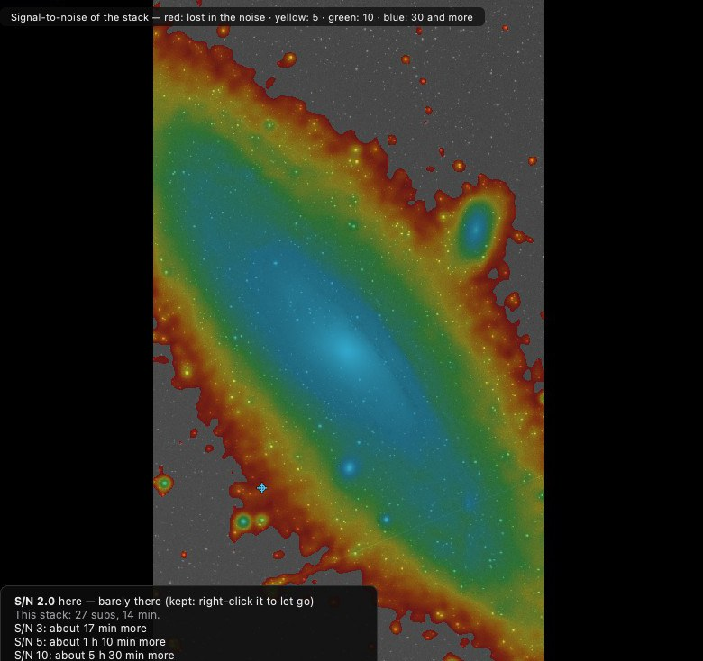
Rapport signal/bruit de la pile en fausses couleurs. Pour la région pointée : le rapport mesuré et le temps de pose supplémentaire pour atteindre 3, 5 et 10.
Exemple : M 31, bras extérieur à S/N 2.
Galerie
Toutes prises au Seestar S50 Pro. La légende de chaque image indique les outils utilisés, moteurs externes compris.
Conception
Chaque traitement rapporte ce qu'il a mesuré : nombre d'étoiles utilisées, poses écartées et motif, gains appliqués, déplacement de la comète. Un réglage sans effet indique pourquoi.
Étirement hyperbolique généralisé, transformée en ondelettes à trous, calibration photométrique sur catalogue, assemblage HDR en lumière linéaire. Implémentations écrites à partir des équations publiées.
GraXpert (fond de ciel) et les moteurs RC-Astro (netteté, bruit, étoiles) sont utilisés depuis l'installation de l'utilisateur, s'ils sont présents et sous licence. Les autres outils n'en dépendent pas.
Chaque étape est réglée, prévisualisée puis appliquée par l'utilisateur. Une étape appliquée peut être reprise.
Téléchargement
Gratuit. Deux installateurs et une version portable pour Windows ; chacun contient l'application et les trois réseaux de COSMO (COSMOSharp, COSMODenoise, COSMOStars), expérimentaux.
Version portable (.zip, sans installation) · 793 Mo
87133e25a608348a25c01e0caf9c08e1deebfb9d60b8d800b87316aa691651b4 COSMO-0.3.3-macos-arm64.dmg
f214d2cea98b905f42265771649befb7f49eea631633815f3a221e31b6b54904 COSMO-0.3.3-windows-setup.exe
be9c77022a3dc3cf5abea6b66744d3f455a6de0843f1343f773787dcfe95b279 COSMO-0.3.3-windows-portable.zip
En téléchargeant, vous acceptez la licence : usage gratuit ; pas de redistribution, pas d'utilisation des réseaux hors de l'application.
Les moteurs facultatifs GraXpert et RC-Astro ne sont pas inclus : COSMO les utilise depuis votre installation. RC-Astro reste soumis à la licence de son éditeur.
Soutenir
COSMO est gratuit et développé sur du temps personnel. Une contribution ponctuelle, facultative, finance le calcul d'entraînement des réseaux et l'achat de données de test.
Le paiement passe par un site externe ; COSMO ne reçoit aucune donnée bancaire. Une contribution ne débloque rien : le logiciel est le même pour tous.
Questions fréquentes
Oui : COSMO, son empileur et ses outils, sans compte ni abonnement. Les moteurs RC-Astro sont un complément facultatif, soumis à la licence de leur éditeur.
COSMO traite toute image FITS ou TIFF du ciel profond. L'outil Stack lit les poses brutes d'un capteur couleur ; il a été mis au point sur les poses d'un Seestar S50 Pro, avec lequel toutes les images de cette page ont été prises.
Lecture : FITS, TIFF, PNG, JPEG. Export : FITS 32 bits, TIFF 16 bits, PNG, JPEG ; les trois derniers portent le profil sRGB.
FWHM, magnitude limite et rapport signal/bruit servent à évaluer une pile. Les magnitudes sont rapportées à la bande G de Gaia à partir d'un capteur couleur : ce sont des estimations, pas une photométrie étalonnée.